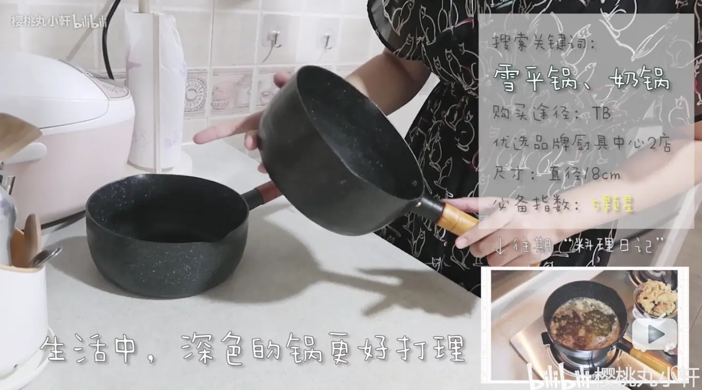
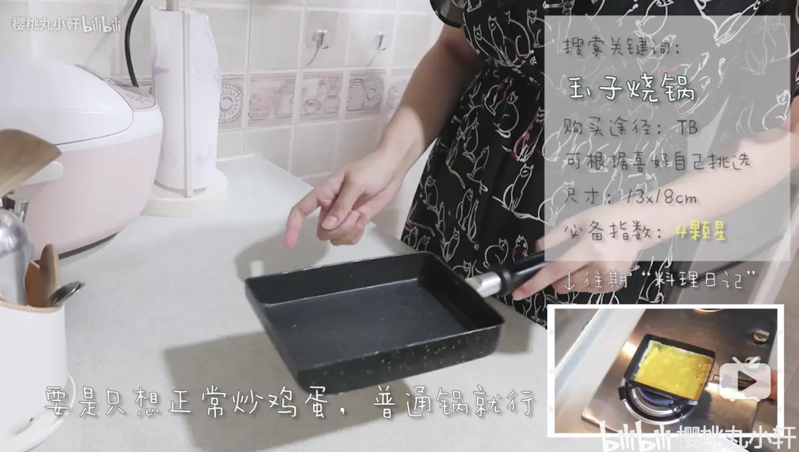
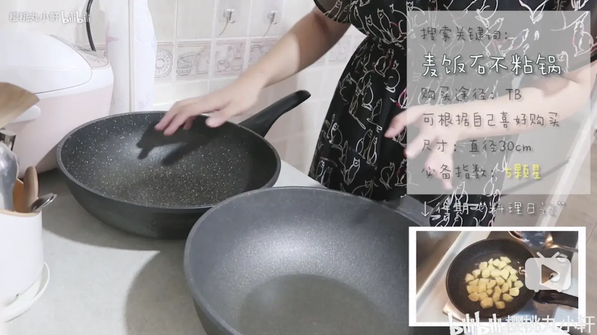
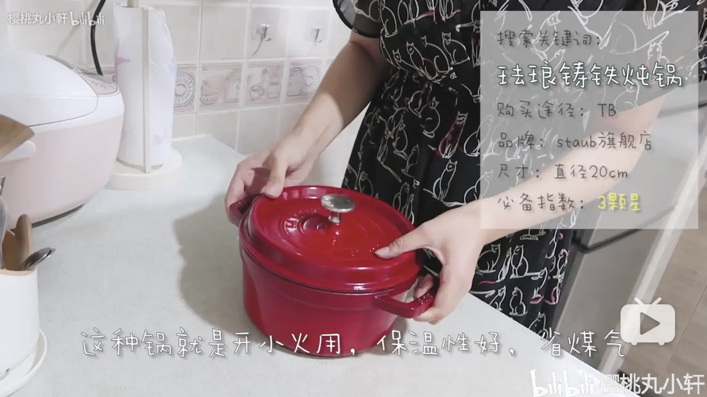
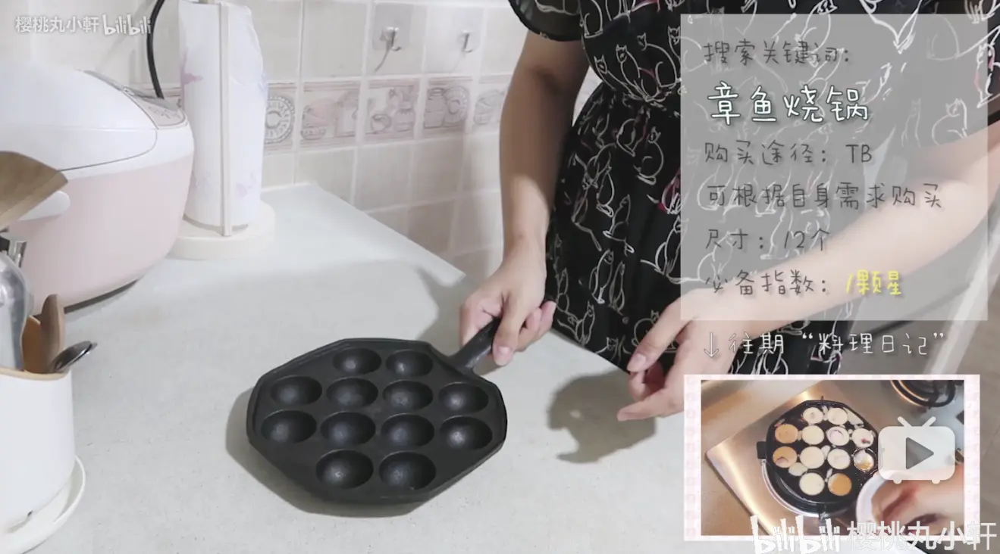

-
雪平锅/奶锅

我的第一pick：雪平锅——万能锅！使用频率第一！
购买途径：淘宝“优选品牌厨具中心2店”
尺寸：18cm（1.9L）
淘口令🔗：$N4ou19ahRrp$
价格：79元
-
玉子烧锅

做蛋烧和煎小物常用！
购买途径：淘宝“鑫焱厨房一站购”
尺寸：13x18cm
淘口令🔗：¢qFUV19aRxIb¢
价格：49元（涨了4元）
-
麦饭石不粘炒锅

炒锅：使用频率超级高，必备
购买途径：挖草+拼多多
尺寸：30cm
🔗：无（大家可以去淘宝上多逛逛挑一挑）
价格：贵点肯定好点，我这两口都200元以下
-
珐琅铸铁炖锅

炖锅：不常用，做肉非常好吃，长久使用值得投资
购买途径：淘宝“staub旗舰店”
尺寸：20cm（一人食尺寸）
淘口令🔗：₳wH0T19aOmAB₳
价格：1188元（购物节时优惠会很大，建议等购物节再入手）
-
章鱼烧锅

不做章鱼烧没必要买🐙
购买途径：淘宝“祥福铸琅炊具”
尺寸：12个款（已经升级变成木柄啦）
淘口令🔗：₴XkWB19aNARz₴
价格：28元